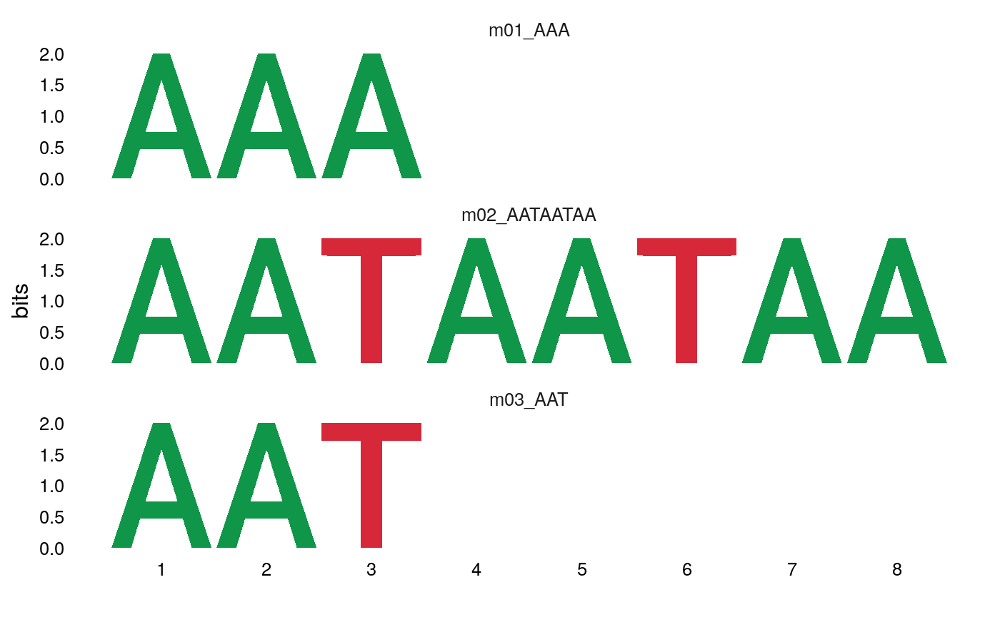
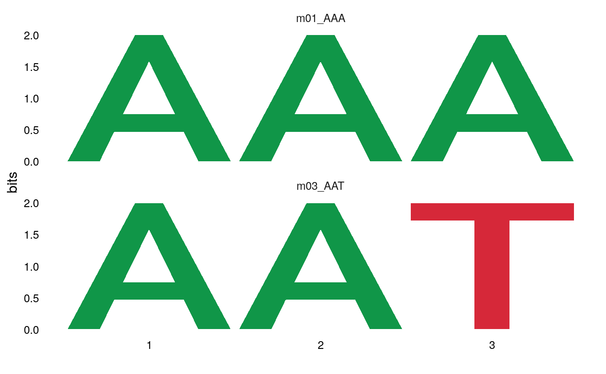
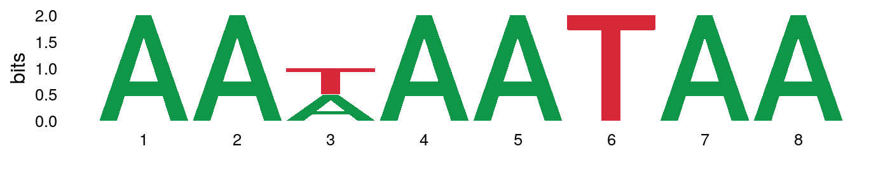

library(memes)
# Verify that memes detects your meme install # should return all green checks if so. check_meme_install() #> checking main install #> ✔ /nas/longleaf/home/snystrom/meme/bin #> checking util installs #> ✔ /nas/longleaf/home/snystrom/meme/bin/dreme #> ✔ /nas/longleaf/home/snystrom/meme/bin/ame #> ✔ /nas/longleaf/home/snystrom/meme/bin/fimo #> ✔ /nas/longleaf/home/snystrom/meme/bin/tomtom #> ✔ /nas/longleaf/home/snystrom/meme/bin/meme
fa <- system.file("extdata/fasta_ex/fa1.fa", package = "memes")
# NOTE: setting e > 1 is usually not recomended. # the example fasta file only has 1 sequence in it # to keep the file size low and let the example run quickly. # I set evalue = 39 because dreme cannot detect high confidence motifs from only 1 sequence. dreme_out <- runDreme(fa, "shuffle", evalue = 39, outdir = tempdir()) #> Registered S3 method overwritten by 'treeio': #> method from #> root.phylo ape
DREME Commandline Documentation
Aliased flags
| memes alias | DREME Flag | description |
|---|---|---|
| nmotifs | m* | max number of motifs to discover |
| sec | t | max number of seconds to run |
| evalue | e | max E-value cutoff |
| seed | s* | random seed if using “shuffle” as control |
| ngen | g | number of REs to generalize |
* flags marked with * must be assigned using their alias
# equivalent to above runDreme(fa, "shuffle", evalue = 39, outdir = tempdir()) runDreme(fa, "shuffle", e = 39, outdir = tempdir(), nmotifs = 2)
dreme results are a data.frame. The motif column contains a universalmotif object with the PCM information for each de-novo discovered motif. This is so that any filtering of the results object also simply filter the available motifs. For more details about each column see the “Value” section of ?runDreme.
dreme_out #> rank name altname seq length nsites positive_hits negative_hits #> 1 1 m01_AAA DREME-1 AAA 3 5 1 1 #> 2 2 m02_AATAATAA DREME-2 AATAATAA 8 10 1 0 #> 3 3 m03_AAT DREME-3 AAT 3 10 1 1 #> pvalue evalue unerased_evalue positive_total negative_total pos_frac neg_frac #> 1 1.0 39 39 1 1 1 1 #> 2 0.5 9 18 1 1 1 0 #> 3 1.0 12 12 1 1 1 1 #> motif #> 1 <S4 class 'universalmotif' [package "universalmotif"] with 20 slots> #> 2 <S4 class 'universalmotif' [package "universalmotif"] with 20 slots> #> 3 <S4 class 'universalmotif' [package "universalmotif"] with 20 slots>
The motif column can be used as input to all universalmotif functions.
library(universalmotif) view_motifs(dreme_out$motif)

The primary advantage of using the data.frame output allows simple integration with base subsetting, piping, and the tidyverse.
library(dplyr) #> #> Attaching package: 'dplyr' #> The following objects are masked from 'package:stats': #> #> filter, lag #> The following objects are masked from 'package:base': #> #> intersect, setdiff, setequal, union dreme_out %>% filter(length == 3) %>% # after filtering with dplyr, only motifs with length 3 will be plotted {universalmotif::view_motifs(.$motif)}

universalmotif manipulations can easily be executed on the motif column as well. For example:
dreme_out$motif %>% merge_motifs() %>% view_motifs()

Updating motif information
Occasionally, it can be useful to update the metadata associated with a dicovered motif (for example, to assign a new name to a denovo motif). memes provides a few utilities to accomplish this.
update_motifs() will search for specific column names which describe properties of the motif column and update the metadata in the motif column to reflect those values. See ?update_motifs for details.
as_universalmotif() will convert one of these special universalmotif data.frames into a universalmotif list after updating the metadata to reflect values as in update_motifs().
# update_motifs will update the values in the motif column # to values in the data.frame dreme_edit <- dreme_out %>% dplyr::mutate(name = c("one", "two", "three")) %>% update_motifs() # as_universalmotif will first update motif information # before returning only the motif column edit_motifs <- dreme_out %>% dplyr::mutate(name = c("one", "two", "three")) %>% as_universalmotif() # The following outputs are identical # where edit_motifs is a list of motifs # and dreme_edit is a data.frame with a motif list column identical(edit_motifs$one, dreme_edit$motif$one) #> [1] TRUE
Notes about shuffled control sequences
Setting control = "shuffle" will use dreme’s random number generator to shuffle the input sequences. By default, dreme will use 1 as the random seed, so repeat runs of the same shuffle command will produce the same output. To change the random seed, pass seed = [your random seed] to runDreme(). NOTE: beware system-specific differences. As of MEME v5, dreme will compile using the default python installation on a system (either python2.7 or python3). The random number generator changed between python2.7 and python3, so results will not be reproducible between systems using python2.7 vs 3 even if setting the same random seed.
One way to overcome this is to manually shuffle the sequences within R. This can be done easily using universalmotif::shuffle_sequences(). Set k = 2 to preserve dinucleotide frequency (similar to dreme’s built-in shuffle), and set rng.seed to any number to create a reproducible shuffle. The output of this function can be used directly as the control sequences.
# Create random sequences to use for this example seq <- create_sequences(rng.seed = 100) # Shuffle sequences preserving dinucleotide frequency shuffle <- shuffle_sequences(seq, k = 2, rng.seed = 100)
Analysis on Multiple Groups and Differential Analysis
Often, users want to perform motif analysis on many groups of sequences. For example, here we have ChIP-seq peaks for a transcription factor, E93. Analysis of chromatin accessibility in E93 peaks revealed sites that Increase accessibility, Decrease accessibility, or remain Static following E93 binding.
suppressPackageStartupMessages(library(GenomicRanges)) suppressPackageStartupMessages(library(plyranges)) peaks <- system.file("extdata/peaks/e93_chr3.csv", package = "memes") %>% readr::read_csv() %>% GRanges #> Parsed with column specification: #> cols( #> chr = col_character(), #> start = col_double(), #> end = col_double(), #> strand = col_character(), #> id = col_character(), #> summit_position = col_double(), #> peak_binding_description = col_character(), #> e93_dependent = col_character(), #> e93_sensitive = col_character(), #> e93_sensitive_behavior = col_character(), #> wildtype_3lw_24apf_behavior = col_character() #> )
To examine whether there are differences in motif content between increasing, decreasing, and static sites, we split the peaks into a list by their response to e93.
by_behavior <- peaks %>% anchor_center() %>% mutate(width = 100) %>% split(mcols(.)$e93_sensitive_behavior)
Next, this list can be used directly in get_sequences() to generate a list of sequences for each set of peaks.
dm.genome <- BSgenome.Dmelanogaster.UCSC.dm3::BSgenome.Dmelanogaster.UCSC.dm3 seq_by_behavior <- by_behavior %>% get_sequence(dm.genome)
names(seq_by_behavior) #> [1] "Decreasing" "Increasing" "Static"
To run DREME on each set using shuffled input sequence as background, run:
runDreme(seq_by_behavior, control = "shuffle")
Discriminative analysis using list input
For this analysis, however, we are most interested in identifying motifs associated with increasing and decreasing that do not involve E93 binding. Therefore, a more appropriate control is to use the Static sites as background.
As always, an XStringSet object can be used as the control regions. However, running dreme in this way will run 3 jobs:
- Increasing vs Static
- Decreasing vs Static
- Static vs Static
This will waste time, as job #3 will detect no motifs (since input & control are identical), but will still take a long time to run. runDreme() has additional functionality to help avoid these issues, and to facilitate more complicated analysis designs.
runDreme(seq_by_behavior, control = seq_by_behavior$Static)
If the input to runDreme is a named list of XStringSet objects, control can be set to one or more values from names(input) to use those regions as background. It will skip running those regions as the input. The following code will result in these comparisons:
- Increasing vs Static
- Decreasing vs Static
runDreme(seq_by_behavior, control = "Static")
If multiple names are used in the control section, they will be combined together to make a single control set which will be used for all comparisons. Here, we use “Static” and “Decreasing” sites as the control, which will result in only running 1 comparison: Increasing vs Static+Decreasing.
Importing previous data
importDremeXML() can be used to import a dreme.xml file from a previous run on the MEME server or on the commandline. Details for how to save data from the DREME webserver are below.
Saving data from DREME Web Server
To download XML data from the MEME Server, right-click the DREME XML output link and “Save Target As” or “Save Link As” (see example image below), and save as <filename>.xml. This file can be read using importDremeXML()

Citation
memes is a wrapper for a select few tools from the MEME Suite, which were developed by another group. In addition to citing memes, please cite the MEME Suite tools corresponding to the tools you use.
If you use runDreme() in your analysis, please cite:
Timothy L. Bailey, “DREME: Motif discovery in transcription factor ChIP-seq data”, Bioinformatics, 27(12):1653-1659, 2011. full text
Licensing Restrictions
The MEME Suite is free for non-profit use, but for-profit users should purchase a license. See the MEME Suite Copyright Page for details.